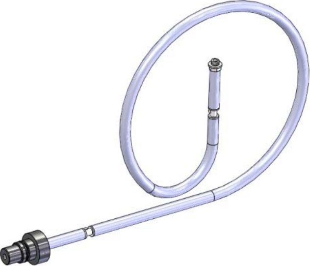
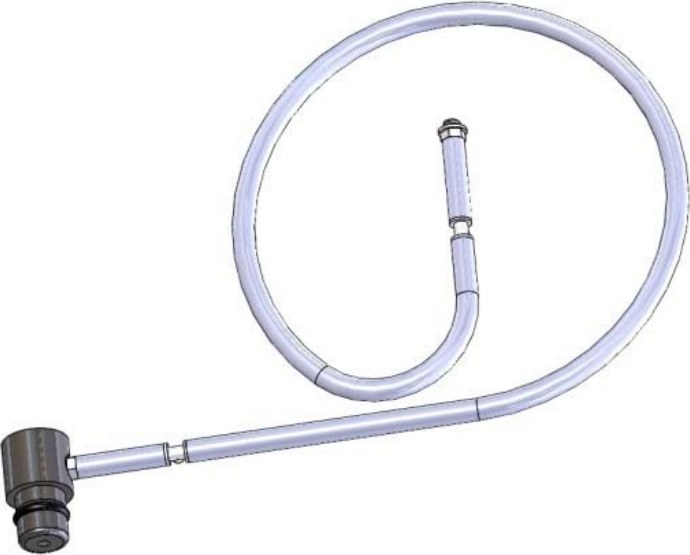

Doc no. MOC-TSB-14-18 // Vol. 14 No. 18 // Dec 11, 2014 // Fuel
Induction Service Tools for Mercedes V6 & V8 engines
New7216672172
MOC has developed 2 new adapters (Part No. 72166 and 72167) for use with the Deluxe Induction Tool (Part No. 72172) when performing an induction service on certain Mercedes vehicles.
What's new
Part No. 72166, for the V6 twin turbo (276 engines), connects at the vacuum hose.
Part No. 72167, for the V8 turbo (278 engines), connects at the temp sensor.
Contact
For more information, contact the Machine & Equipment Department at 866.244.6621.


Part numbers
| Part No. | Description | Notes |
|---|---|---|
| 72166 | Adapter, Mercedes V6 Twin Turbo (276 engine) | |
| 72172 | Deluxe Induction Tool | |
| 72167 | Adapter, Mercedes V8 Turbo (278 engine) |